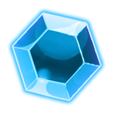
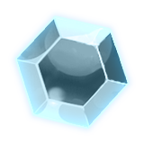
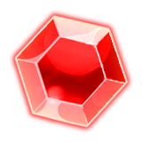
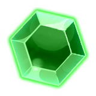
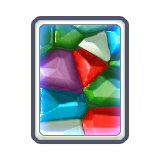

Gems and Gem Plates
Cubic Odyssey ships four base gems — Diamond, Ruby, Emerald, Sapphire — plus a Glowing variant of each at tier 7. They're all type RESOURCE in the items catalog (not RAW_ORE like the metals), but they spawn the same way: as mineable voxels in the world. They're the hardest blocks in the game to break and feed one of the biggest crafting categories.
The four base gems
| Gem | Tier | Mine unit | Price | Demand | Color | |
|---|---|---|---|---|---|---|
| Diamond | T5 | 0.2 | 120 | 0.5 | rgb(125,128,129) | |
| Ruby | T5 | 0.2 | 120 | 0.5 | rgb(130,71,68) | |
| Emerald | T5 | 0.2 | 120 | 0.5 | rgb(87,115,76) | |
 |
Sapphire | T5 | 0.2 | 120 | 0.5 | rgb(89,105,123) |
Mine unit 0.2 is the lowest value in the game — gems are roughly 3–4× harder to break than Iron (mineUnit 0.7). You'll feel that on every swing.
The Glowing variants (tier 7)
Each base gem has a Glowing twin. They share the same voxel colour and texture but live in voxel category E_VCAT_GLOWING_ORES and require a higher-tier mining laser. Prices double, demand stays positive.
| Glowing gem | Tier | Mine unit | Price | Recycle | |
|---|---|---|---|---|---|
 |
Glowing Diamond | T7 | 0.2 | 260 | 2 |
 |
Glowing Ruby | T7 | 0.2 | 170 | 2 |
 |
Glowing Emerald | T7 | 0.2 | 360 | 2 |
| Glowing Sapphire | T7 | 0.2 | 360 | 2 |
The Gem Plate — gems' "ingot"
Gems don't go through a furnace. The closest analogue to an ingot is the Gem Plate, made by combining one of each gem at a crafting bench:
| Recipe | Qty | |
|---|---|---|
| Diamond | 1 | |
| Ruby | 1 | |
| Emerald | 1 | |
| Sapphire | 1 | |
 |
→ Gem Plate T5 · price 600, recycle 5 | 1 |
Requires CRAFTING 16. The Plate's base price (600) is a small markup over the raw inputs (4× 120 = 480), so the combine is for access, not for flipping. Every gem-eating craft past Crafting 16 wants plates, not individual gems.
What the plate goes into
Across all 509 catalog items, 87 crafting recipes consume Gem Plates. The top consumers:
| Crafts | Plates | Skill |
|---|---|---|
| Suit 12 | 50 | CRAFTING@0 |
| Corruption Purifier 5 | 50 | CRAFTING@24 |
| V Dreadnought Cargo Mk5 | 48 | CRAFTING@20 |
| V Dreadnought Space Engine Mk5 | 48 | CRAFTING@20 |
| V Dreadnought Shield Mk5 | 48 | CRAFTING@20 |
| V Frigate Cargo Mk5 | 48 | CRAFTING@20 |
| V Frigate Space Engine Mk5 | 48 | CRAFTING@20 |
| V Frigate Shield Mk5 | 48 | CRAFTING@20 |
| V Laser Dreadnought Mk5 | 48 | CRAFTING@20 |
| V Laser Frigate Mk5 | 48 | CRAFTING@20 |
| Suit 11 | 40 | CRAFTING@0 |
| V Corvette Cargo Mk5 | 32 | CRAFTING@20 |
| V Corvette Space Engine Mk5 | 32 | CRAFTING@20 |
| V Corvette Shield Mk5 | 32 | CRAFTING@20 |
| V Galleon Cargo Mk5 | 32 | CRAFTING@20 |
| V Galleon Space Engine Mk5 | 32 | CRAFTING@20 |
| V Galleon Shield Mk5 | 32 | CRAFTING@20 |
| V Laser Corvette Mk5 | 32 | CRAFTING@20 |
| V Laser Galleon Mk5 | 32 | CRAFTING@20 |
| Ship Battery 5 | 32 | CRAFTING@16 |
| Suit 10 | 30 | CRAFTING@0 |
| Corruption Purifier 4 | 30 | CRAFTING@20 |
| Suit 9 | 25 | CRAFTING@0 |
| V Dreadnought Cargo Mk4 | 24 | CRAFTING@16 |
| V Dreadnought Space Engine Mk4 | 24 | CRAFTING@16 |
Direct uses (raw gem, no plate)
Some recipes call for a specific gem rather than a plate — usually because the gem's identity matters (a Ruby laser sword is red, not just "gem-coloured"). The top consumers per gem:
Diamond
| Crafts | Qty | Skill |
|---|---|---|
| Yellow Plasma Sword | 20 | CRAFTING@24 |
| Suit 4 | 12 | CRAFTING@8 |
| V Dreadnought Chassis Mk2 | 9 | CRAFTING@4 |
| V Galleon Chassis Mk2 | 7 | CRAFTING@4 |
| V Frigate Chassis Mk2 | 6 | CRAFTING@4 |
| V Corvette Chassis Mk2 | 4 | CRAFTING@4 |
| Gem Plate | 1 | CRAFTING@16 |
| Voxel Ancient Hull Emissive2 | 1 | CRAFTING@0 |
Ruby
| Crafts | Qty | Skill |
|---|---|---|
| Red Plasma Sword | 20 | CRAFTING@24 |
| Suit Corrupt 2 | 12 | CRAFTING@8 |
| V Dreadnought Chassis Mk3 | 9 | CRAFTING@8 |
| V Galleon Chassis Mk3 | 7 | CRAFTING@8 |
| V Frigate Chassis Mk3 | 6 | CRAFTING@8 |
| V Corvette Chassis Mk3 | 4 | CRAFTING@8 |
| Gem Plate | 1 | CRAFTING@16 |
Emerald
| Crafts | Qty | Skill |
|---|---|---|
| Green Plasma Sword | 20 | CRAFTING@24 |
| V Dreadnought Chassis Mk2 | 9 | CRAFTING@4 |
| V Galleon Chassis Mk2 | 7 | CRAFTING@4 |
| V Frigate Chassis Mk2 | 6 | CRAFTING@4 |
| Drone Pmu 5 | 4 | CRAFTING@20 |
| V Corvette Chassis Mk2 | 4 | CRAFTING@4 |
| Drone Pmu 4 | 2 | CRAFTING@16 |
| Gem Plate | 1 | CRAFTING@16 |
Sapphire
| Crafts | Qty | Skill |
|---|---|---|
| Blue Plasma Sword | 20 | CRAFTING@24 |
| V Dreadnought Chassis Mk3 | 9 | CRAFTING@8 |
| V Galleon Chassis Mk3 | 7 | CRAFTING@8 |
| V Frigate Chassis Mk3 | 6 | CRAFTING@8 |
| Portal Planet | 5 | CRAFTING@1 |
| V Corvette Chassis Mk3 | 4 | CRAFTING@8 |
| Gem Plate | 1 | CRAFTING@16 |
Where to find them
Density data from data/configs/voxeldistributions/ — frequencies summed across all layers, max m_extent kept per distribution. Higher freq = more nodes per chunk; higher extent = larger veins.
Diamond
| World type | Total freq | Max vein |
|---|---|---|
| crystalline_voxels | 128 | 100 |
| xeno_voxels | 100 | 35 |
| earth_voxels | 54 | 40 |
| majestic_voxels | 37 | 30 |
| default_deposits | 10 | 0 |
| default | 5 | 14 |
Ruby
| World type | Total freq | Max vein |
|---|---|---|
| crystalline_voxels | 128 | 100 |
| xeno_voxels | 76 | 35 |
| earth_voxels | 54 | 40 |
| majestic_voxels | 37 | 30 |
| debug | 16 | 0 |
| default_deposits | 10 | 0 |
| default | 5 | 26 |
Emerald
| World type | Total freq | Max vein |
|---|---|---|
| crystalline_voxels | 128 | 100 |
| xeno_voxels | 76 | 35 |
| earth_voxels | 54 | 40 |
| majestic_voxels | 37 | 30 |
| default_deposits | 10 | 0 |
| default | 5 | 22 |
Sapphire
| World type | Total freq | Max vein |
|---|---|---|
| crystalline_voxels | 128 | 100 |
| xeno_voxels | 76 | 35 |
| earth_voxels | 54 | 40 |
| majestic_voxels | 37 | 30 |
| default_deposits | 10 | 0 |
| default | 5 | 20 |
Crystalline planets consistently win for every gem: roughly 2–3× the spawn frequency of Earth-like and larger veins (extent up to 50 vs ~30). If you've got serious gem demand, fly to Crystalline.
Mining strategy
- Mining Laser 4 minimum (voxel_tier 5). Laser 3 and below cannot break gems at all.
- Mining Laser 6 or 7 if you're going after Glowing gems (tier 7).
- Bring a fully-charged battery. mineUnit 0.2 means longer beam duration per block; energy drains fast.
- Run vertical shafts on Crystalline worlds. Gem veins cluster in mid-to-deep layers; extent 50 means larger veins are worth the dig.
- Save full Plates, not stacks of 100 single gems. Plate combines need 1 of each — so a stockpile of 30/30/30/30 = 30 plates. Mixing matters more than total count.
Trading angle
Every gem has base_demand 0.5 (mildly positive — merchants will buy them) and Gem Plates have a 600-qubit base price. Selling raw gems is fine early; selling Plates is better once you have Crafting 16 because the plate is more compact (one plate per inventory slot vs four single gems). For high-volume flipping, see the Trade Discount perk and the high-demand items table on that guide.